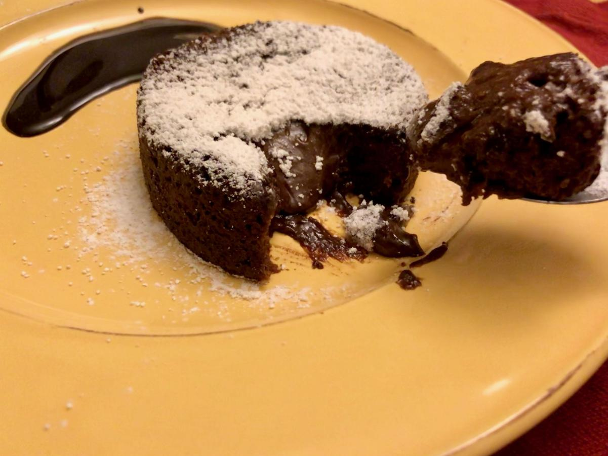

Based on http://spoonuniversity.com/recipe/valentines-chocolate-cake
Personal rating: 3 / 5

2 medium-sized ramekins
Cocoa powder
0.5 tablespoon unsalted butter, melted
3.5 Tbsp unsalted butter, cut into cubes
50g 70% dark chocolate bar
1 egg, room temperature
1 egg yolk
1/4 cup sugar
1/3 cup & 1 Tbsp flour
pinch salt
Powdered sugar, for dusting
Vanilla Ice Cream
Preheat the oven to 400
Grease 2 ramekins with the melted butter and dust with cocoa powder
Melt the chocolate and rest of the butter. Set aside to cool
Beat the egg, yolk, and sugar until thick and pale
Fold in the butter/chocolate
With a sift, slowly add the flour and fold in
Pour the mixture into the ramekins. Bake for 10 minutes +/- 30 seconds
Let cool for two minutes, then careful flip the ramekin and tap out the cake. Dust with powdered sugar